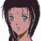
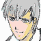
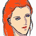

ナレーション 「独立自治権を勝ち取った宇宙移民者群セツルメントは、ようやく得た平和の中に麻痺し、やがては特権主義社会を生み出し、結局は自らが小セツルメントへの圧政を強いるようになる。時に宇宙世紀２５５年。各地で起きたセツルメント内紛争は、体制側と、反体制側に別れてその共同戦線を張り、セツルメント間による強大な戦禍を巻き起こしつつあった」
タイトル
|
− Aria on Dead line − |
 ジーン 「こら、こっちには来るなって言ってあるだろ」
ジーン 「こら、こっちには来るなって言ってあるだろ」
 ユーニス 「ジーンさぁん、余ってる集音器ないかって、イヴリンさんが」
ユーニス 「ジーンさぁん、余ってる集音器ないかって、イヴリンさんが」
ジーン 「あぁ？ 次は宇宙戦だろ。集音器なんか何に使うんだ？」
ユーニス 「えへへ。ちょっとねー」
 イヴリン 「これ？」
イヴリン 「これ？」
ユーニス 「うん。余ってるのは、お肌の触合い回線用だって。作業用マシンの」
イヴリン 「・・・デカいわね」
 ＡＪ 「よし。とりあえず、中央ポートの占拠は完了したんだな。よし、わかった。ああ、他のポートはいい。エクレシアの小競り合いに手を貸してる余裕はない。うむ、わかった。そうしてくれ」
ＡＪ 「よし。とりあえず、中央ポートの占拠は完了したんだな。よし、わかった。ああ、他のポートはいい。エクレシアの小競り合いに手を貸してる余裕はない。うむ、わかった。そうしてくれ」
ＡＪ 「・・・さて」
 アベル 「あの、・・・あの子の、・・・容態は？」
アベル 「あの、・・・あの子の、・・・容態は？」
ＡＪ 「その件に関しては、ケーラー先生が看てくれている。心配は要らない。それよりも、君の処分だ」
アベル 「処罰なら、受けます。でも、僕は間違った事はしてません」
ＡＪ 「そうだな。だが、君が彼女を助ける際、戦闘中にも関わらずソードケインを離れた。その時、撃墜されていたらどうなる？ 彼女はおろか君まで死んでいる。それだけじゃない。君がまだこれから助けられるはずの、多くの人々までが死ぬ事になる」
アベル 「これから、助けられる人・・・」
ＡＪ 「イヴリンが、今助けられる人を助けろと言ったらしいな。それも正しいだろう。だが君にはまだまだ、助けなければならない多くの人々がいる。それを忘れるな」
アベル 「・・・はい」
ＡＪ 「私は、君が間違っていたとは思わないが、無茶をして欲しくもない。その為の規律や命令だ。・・・以後、命令は厳守してくれ」
アベル 「あのっ、・・・処分は」
ＡＪ 「本来なら厳罰モノだが、今はまだ、議会軍本隊との戦闘が控えている。エクレシアとセグメントの小競り合いもある。エースパイロットを営倉に閉じ込めておく余裕はない」
アベル 「え・・・」
ＡＪ 「とは言え、無罪放免では周囲に示しがつかん。気付に一発入れるから、歯を食い縛れ」
アベル 「えっ、あっ。・・・は、はいっ！」
パンチの音。
ユーニス 「お兄ちゃん！」
イヴリン 「あーらら、いい音。・・・とは言え、やっぱりアベルに甘いわね、長官は。・・・っと」
ＡＪの声 「すぐに立って対議会軍戦の準備をするんだ！」
アベルの声 「はいっ！」
ジーン 「なんだなんだ。そんなモンを借り出したと思ったら、盗み聴きかぁ？ もっと色っぽい場面にしろよ」
イヴリン 「そーゆー趣味はないの。まして、艦長と長官の密会なんて盗み聞こうモノなら、オオゴトよ」
ジーン 「そりゃ言える」
ユーニス 「それで、お兄ちゃんの助けたって女の人は大丈夫なのかな？」
イヴリン 「撃たれてるらしいけど、命に別状はないってさ」
アベル 「・・・？ どうしたの？ みんな」
ユーニス 「お兄ちゃん！ 大丈夫！？」
アベル 「えっ？ なんっ！？ いたたたっ」

シャヒーナ 「う・・・」ケーラー 「傷は大した事ないが、体は起こさない方がいい」
ケーラー 「・・・さて。お目覚めの所を悪いが、少々聞きたい事がある」
シャヒーナ 「・・・どうぞ」
ケーラー 「私はこれでも軍医なのでね。君の銃創が如何にして作られたかぐらいは、見ればわかる」
シャヒーナ 「そう」
ケーラー 「君は、君自身の銃で自分を撃った。違うかね？」
シャヒーナ 「違わないわ」
ケーラー 「何の為に？」
シャヒーナ 「あの、アベルってパイロットと接触して、あなたたちの正体を掴む為よ」
ケーラー 「ふん。随分と素直だな」
シャヒーナ 「その気なら、麻酔薬が効いている間に喋らせているでしょう？」
ケーラー 「頭は悪くないな。所属は？」
シャヒーナ 「エクレシア。・・・あなたたちは敵？ 味方？」
ケーラー 「どう考えても味方だろう。スパイ嫌疑の掛かってる君を助けるぐらいだからな」
シャヒーナ 「それで・・・、どうするつもり？」
ケーラー 「安心しろ。スパイである事も報告しない」
シャヒーナ 「それこそ、どういうつもりかしら？」
 ルクレール 「・・・それはどういう、お積もりなのですか？」
ルクレール 「・・・それはどういう、お積もりなのですか？」
 シャイロン 「もう一度言う。この名簿にある士官は全て、各自の機密Ｃ以上の資料と必要最低限の荷物を持って、戦艦レメッドへ移動させろ。なお、もう一方の名簿にある士官には、一切気取られないように細心の注意を払ってくれ」
シャイロン 「もう一度言う。この名簿にある士官は全て、各自の機密Ｃ以上の資料と必要最低限の荷物を持って、戦艦レメッドへ移動させろ。なお、もう一方の名簿にある士官には、一切気取られないように細心の注意を払ってくれ」
ルクレール 「し、しかし、それではまるで・・・」
シャイロン 「あまり難しく考えるな、ミロ副官。我々に異動の辞令が下りただけだ」
ルクレール 「・・・あの男、何を考えている。・・・まるで。・・・それに、異動する士官は全員リカード派じゃないか。本当にパーノッド派を一掃するつもりか？・・・いや、与えられた任務を遂行させる事だけに集中するんだ」
シャイロン 「さて、君にも一働きしてもらうよ。ギルバート・ゲノック中尉」
猿轡を噛まされ、抑えられているギルバート。
シャイロン 「君に決定権などない。・・・だが、君に働いてもらう前に、まずは私が働かねばな」
シャイロン 「アーリキュラーの準備は出来ているな？」

ケネス 「おーおー、やっちまったな。エクレシアの連中も各ポートを抑えっちまったよ」ボッシュ 「ふん。あの連中が絡んでなければ、まずまずめでたい話なんだがな」
ケネス 「何にしろ、狙いはハッキリしちまったな。このまま議会軍本隊がセツルメントに着陸したらエクレシアが勝っちまう」
ボッシュ 「本隊が沈められたとあっちゃ、議会は本腰を入れて危険分子であるエクレシアを叩きに来る」
ケネス 「けっ、あいつらの考えそうな事だ」
ボッシュ 「よし、ケネス。・・・任務内容はわかってるな」
ケネス 「サイファーで議会軍本隊を軽〜く攻撃。連中を第一戦闘配備にさせて、入港時の奇襲を防がせる」
ボッシュ 「相手は中隊だ。例えヘボでも数は脅威になる。落とされるなよ」
ケネス 「俺を落とせるのは美女だけって言ってるだろ」
シャヒーナ 「アベルの・・・、情操コントロール？」
ケーラー 「いかにも。どうやらアベルは、君に安くない感情を抱いているらしいのでね。もし、この先にアベルが戦闘や命令を拒否する事があれば、その時は君が説得して欲しい」
シャヒーナ 「断れば？」
ケーラー 「断る理由がない。我々は君の味方だ。スパイ行為までは容認しないがな」
シャヒーナ 「うますぎる話も信用出来ないけど」
 キャロライン 「失礼します、ドクター」
キャロライン 「失礼します、ドクター」
ケーラー 「寝ていろ」
キャロライン 「ドクター。先程の・・・」
ケーラー 「問題ない。弾丸は貫通しているし、内臓も反れてる。二日三日で治る怪我でもないがな」
キャロライン 「麻酔状態から、何か情報は聞き出せましたか？」
ケーラー 「所属はエクレシアだな。どうやらポートを襲撃したメンバーらしい」
キャロライン 「アベル君と接触した事がある様子ですけど、いずれかの機関のスパイである可能性は？」
ケーラー 「なさそうだな。なまじ、そうであったとしても艦はもうすぐセツルメントを離れる。そうなれば外部との接触など不可能だ」
キャロライン 「応急治療だけして、艦から降ろす訳には行きませんか？」
ケーラー 「それよりは、アベルの情操コントロールパーソンの一人として働いてもらう」
キャロライン 「アベル君の、恋人役として？」
ケーラー 「家族。恋人。・・・人間の行動原理なんて、安い感情だと言う事だよ」
イヴリン 「アベル、準備はいい？」
アベル 「いけます」
イヴリン 「一応言っとくけど、勝手な行動は厳禁だからね」
アベル 「はい」
イヴリン 「それと、いいわね。敵主力戦艦アヴィゴッドが、誘導灯のラインに乗ったら、一気に出撃して叩くわよ。まともにレーダーは効いてないから、カメラの目視を頼りにして」
アベル 「了解です」
イヴリン 「焦らないで。連中をギリギリまで引き寄せなくちゃね」

アイキャッチ「Ｇ−ＧＵＩＬＴＹ」
ケネス 「ケネス、サイファー出る！」
ケネス 「さぁて、ドンパチやって本隊さんに気合を入れてやるかな」
シャイロン 「やはりな。連中が隠れているとしたらこのゴミ捨て場か・・・」
ケネス 「ん？」
ケネス 「うあっ！」
ケネス 「なんだぁ！？ 議会の先行部隊か！？」
シャイロン 「私がわからないなど、随分と鈍ったものだな！ ケネス！」
ケネス 「おいおいおいおいおい・・・っ！」
シャイロン 「先日は駐在軍などに任せていたら貴様と出会い損ねたのでね。今度は網を張らせてもらった」
ケネス 「シャイロン・チェイ・・・！ お前かっ」
シャイロン 「貴様と会える事をどれほど楽しみにしていたか！ 大義を忘れそうになるほど、貴様を欲したぞ！ ケネス！」
ケネス 「オトコに好かれて喜ぶ趣味はねえんだわ！」
シャイロン 「この・・・左目が、今でも網膜に貴様を焼き付けている！」
ケネス 「あれは事故だったって何度説明すればわかるかなァ・・・。あんまり思いつめるとハゲるぜ・・・って、お前モトからデコ広かったっけな！」
シャイロン 「どうした？ 貴様は議会軍のもとへ行かねばならんのだろうが？」
ケネス 「わかってるなら邪魔すんなってよ」
シャイロン 「私の目的は貴様を先へ行かせぬ事だ。・・・だが、こうも不甲斐ないと沈めてしまうぞ」
ケネス 「くっ、ＪＡＣ戦じゃ奴に分があるなっ！」
シャイロン 「こう遮蔽物が多くては、銃撃戦は難しかろう」
ケネス 「なんのっ！ そっちこそデカい図体でゴミん中は動きにくいんじゃねえの！？」
シャイロン 「接近戦では質量も重要だよ！」
ケネス 「いちいち理屈くせえんだよ。・・・ちっ、あの光が本隊かっ！？」
シャイロン 「私の勝ちだな！ 議会本隊には沈んでもらう」
ケネス 「くそっ！ コレで気付けえぇっ！」
シャイロン 「させん！」

サーナイア 「・・・今のは何の光か？」
 兵士 「あっちはクズ鉄のたまり場ですよ。ジャンク屋がドジでも踏んだんじゃないですかね？」
兵士 「あっちはクズ鉄のたまり場ですよ。ジャンク屋がドジでも踏んだんじゃないですかね？」
サーナイア 「貴様の予想など聞いておらん。確実な情報だけを報告せよ。判断は私が下す」
兵士 「そうはおっしゃいますが、何しろＭ粒子の濃度が最大値です。この距離で、管制塔とさえ連絡がつかないんですよ？」
サーナイア 「セツルメント内で何が起きている・・・？」
兵士 「サーナイア艦長、着艦の準備に入らせますよ？」
サーナイア 「・・・総員、着艦準備・・・・・・待て」
兵士 「艦長？」
サーナイア 「妙だ・・・。減速して管制塔への打診を続けろ。二重で暗号も送信しろ」
兵士 「は、はい。直ちに減速。打電、管制塔からの応答を確認しろ！」
アベル 「停止！？ 減速したの！？」
イヴリン 「減速！？ もう感付かれたの！？」
アベル 「イヴリンさん！」
イヴリン 「ちょっと足りないけど、出るわよ！」
アベル 「はいっ！」
ケネス 「くそっ！ どけ！」
シャイロン 「もう遅い！ ついでに貴様もここで死ね！」
ケネス 「俺様の命をついで扱いするなってよ！」
兵士 「あ・・・、あれ、あの光、マシンです！」
サーナイア 「各艦に伝達！ 第一戦闘配備！ 各員戦闘配置につけ！ マシンの所属を認識しろ！ デッキ！ マシンはディザールを出せ！」
兵士 「しょ、所属は不明です！ デッキのディザール隊は直ちに出撃！」
サーナイア 「急速逆噴射！ 即刻セツルメントから離脱せよ！」
兵士 「ええっ！？ そりゃ無理です！ こっちの物資は切れかけですよ！ 補給受けないと！」
サーナイア 「沈められては物資もクソもない！ 所属不明機はバロルバロイだ！ 勧告の必要はない！ 迎撃しろ！」
兵士 「は、はいっ！ 全艦後退、応戦しつつ後退しろ！」
イヴリン 「連中の体勢が整う前に潰すわよ！ 両端の護衛艦から叩いて！」
アベル 「了解！」
サーナイア 「何と言う事だっ・・・！ Ｍマシンを展開させろ！ 相手はたった二機だ！」
兵士 「左翼レットサップT沈みます！」
サーナイア 「くそっ！ 砲撃！ 弾幕を張れ！ 当てなくていい！ とにかく近付けるな！ マシンはどうなってる！ とにかく出して足どめさせろ！」
兵士 「さ、左翼レットサップ！ もう一艦、沈みます！」
サーナイア 「主砲！ レットサップVのエンジン部を狙え！ コース上のマシンは避難！」
兵士 「か、艦長！？」
サーナイア 「どうせ沈む！ 煙幕として役立てろ！」
兵士 「しかし、乗組員の退艦は・・・！」
サーナイア 「どけ！ 照準はレットサップVのメインエンジン！ 低速で撃ってなるべく大きく爆破させろ！」
ケネス 「どけっ」
シャイロン 「くっ！ さすがにＧ相手にはここまでかっ！」
ケネス 「てめえっ」
シャイロン 「貴様は落とし損ねたが、一方の目的は達成されたようなのでな。後退させてもらう！」
サーナイア 「よし、撃てえぇっ！」
アベル 「主砲！？ 味方の艦だぞ！」
イヴリン 「っ！ 艦の爆破を盾にするなんて・・・っ！」
ケネス 「くっ！ 何事だっ！」
アベル 「駄目だっ」
イヴリン 「さすがに体勢が整ったらしいわね。これ以上の追撃は無理よ。撤退するわ」
アベル 「でも・・・っ」
イヴリン 「概ねの目的は達成されてるわ。アベル」
アベル 「了解しました」
サーナイア 「レットサップが三隻だと！ ・・・やってくれた！ この代償は高くつくぞ！ バルバロイどもめ！」
シャイロン 「くっ。くっくっ。はははははははは。ケネス、お前が来れば、屍の山がまたひとつ出来るぞ」

ナレーション 「民衆との和平を望む兵達は反旗を翻し、シャイロンは逃亡した。しかしそれも計算の内なのか、敗残兵が核動力を盾に取る。全てが吹き飛ばす核。それを阻止できるのはアベルひとりだけ。次回、『核動力を奪回せよ』 Ｇの鼓動が、今目覚める」